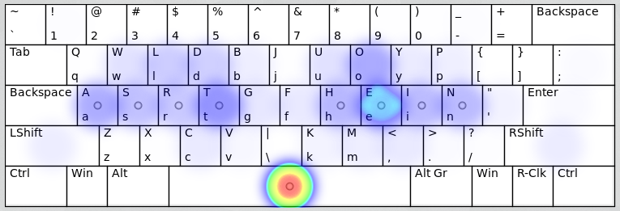

More comfortable typing technique. Better keyboard layouts.
The Hein layout, named after the right-hand home keys, takes some design elements from Colemak, but keeps more keys in their Qwerty positions to maximize ease-of-learning. It also assumes the middle-finger top-row keys (Qwerty E, I) are of almost home row quality and allows common keys to occupy such positions, notably O. It shares many similarities with Solemak, and has an identical left-hand side.
Hein attempts to fix many of the same issues with Colemak described in the Solemak page. The result is an optimized keyboard layout which moves fewer keys (relative to Qwerty) than Colemak, while nevertheless fixing many of Colemak's flaws. Some may find that a common key such as O should be on the home-row, and if you think that, then Hein may not be for you, and you should consider Solemak instead. It really depends on how you feel about the top-row middle finger keys - many believe, that being the longest digit, the middle finger comfortably reaches the upper row. If you agree with that premise, then Hein should offer an excellent typing experience at a relatively low learning cost.
| Letter keys relative to Qwerty | |||
| Layout | Unchanged | New location, same finger | New location, different finger |
|---|---|---|---|
| Hein | 12 : Q W U P A S G Z X C V M | 4 : T H J B | 10 : E R Y I O D F K L N |
| Colemak | 10 : Q W A H Z X C V B M | 4 : G J T N | 12 : F P L U Y R S D E I O K |
| Hand/Finger balance | ||
| Finger | LEFT | RIGHT |
| index finger | 20.3% | 15.0% |
| middle finger | 10.0% | 20.2% |
| ring finger | 8.7% | 9.0% |
| pinky finger | 8.2% | 8.5% |
| hand total | 47.2% | 52.8% |
Hand Alternation¹: 57%
Same finger bigrams²: 1.2%
See the full layout comparison on the Results Page.
A heatmap, generated using the patorjk.com keyboard analyzer:
See also: Layout design principles, Niro layout, Solemak layout.